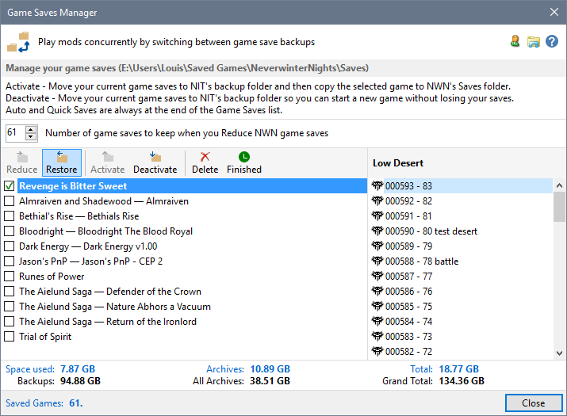
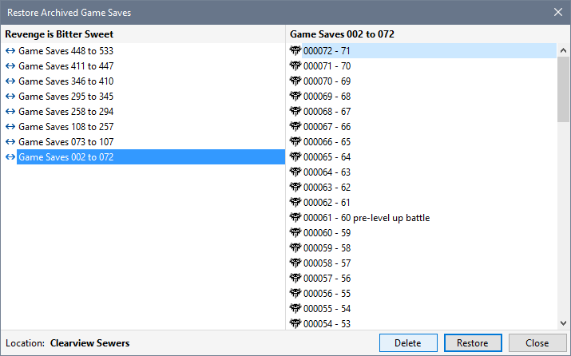
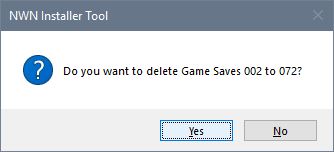
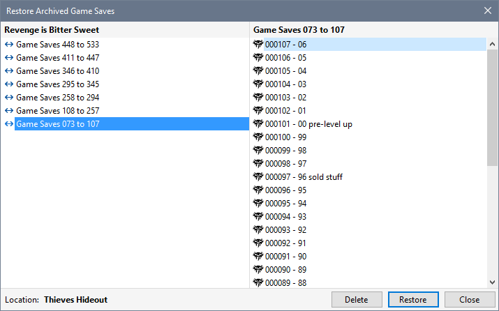

Each time you use Reduce game saves, the Manager creates a folder describing the range of game saves that have been moved to the game's archive folders (eg 000101-000130).
You can only Delete archived Game Saves for the game you are playing.




Automatic backup of Game Saves
Display Character Summary Information
Open a game save folder with Windows File Explorer
Restore Game Saves from Backup
Reduce the number of NWN Game Saves
Delete archived Game Saves
Restoring deleted saves from the Recycle Bin